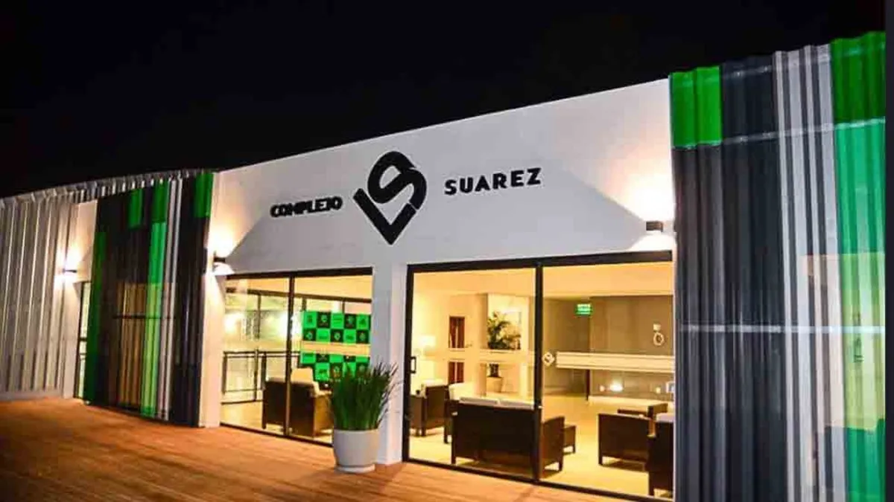

Las instalaciones
El complejo cuenta con instalaciones de primer nivel para el pais, y contribuye con lugares carenciados de la zona donde se encuentra.

El proyecto contiene parte de la historia futbolística de Luis Suárez, un paseo en el acceso que repasa logros y equipos
Se ubica en Ciudad de la Costa, completamente accesible no solo para la gente de la zona, sino tambien de Montevideo y todo Canelones